한눈에 보는 흐름
지난 실습의 ②HTML 저장형(포장)에서 한 걸음 더 — 파일에 주소를 달아 줍니다.
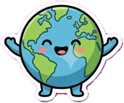
만들기제미나이 캔버스로 index.html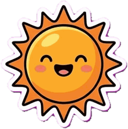
꾸미기제미나이로 로고·버튼·그림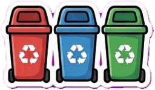
모으기index.html + images 폴더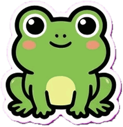
올리기깃허브 저장소 / 넷리파이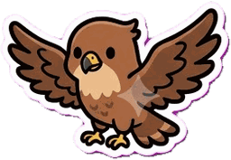
나누기주소·QR을 학생에게제미나이로 로고·버튼·그림 만들기
한 대화방에서 이어서 만들면 그림체가 통일됩니다. "같은 그림체로"를 꼭 붙이세요.
1이미지 만들기 켜기
- gemini.google.com 접속
- 입력창 왼쪽 ＋ 누르기
- 이미지 만들기 선택 → 입력창에 '이미지' 칩이 생기면 준비 끝
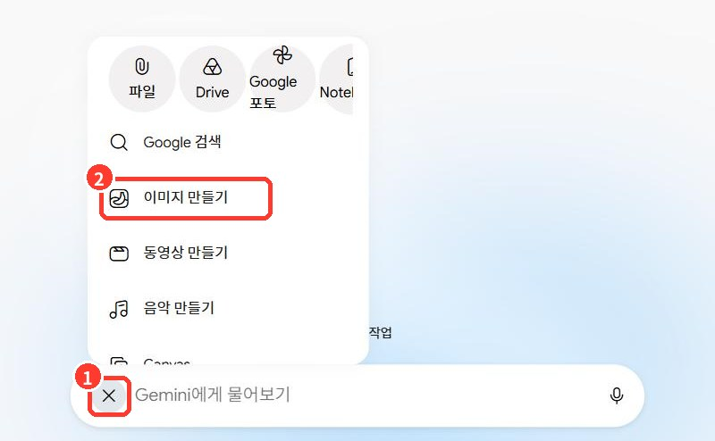
2로고 주문하기
무엇을, 어디에, 어떤 색·그림체로, 배경은 어떻게 — 네 가지를 한 문단에 씁니다.
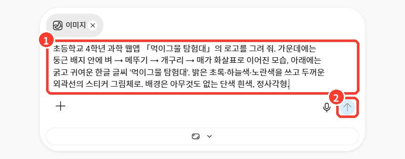
3과학 선생님의 눈으로 검토하고 고쳐 달라고 하기
첫 결과는 예뻤지만 벼 → 개구리, 양쪽 화살표처럼 과학적으로 틀린 화살표가 있었습니다. 지도서 기준(화살표는 먹히는 생물 → 먹는 생물)을 알려 주고 고쳐 달라고 했더니 바로 고쳐졌어요.
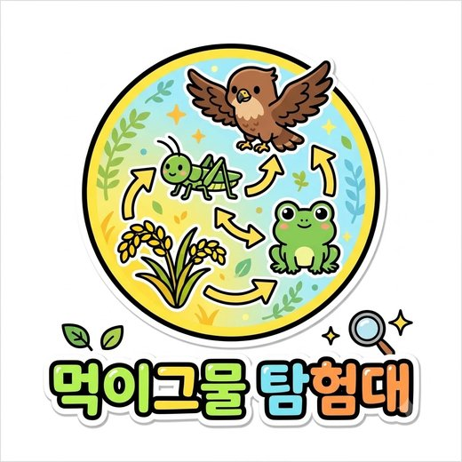
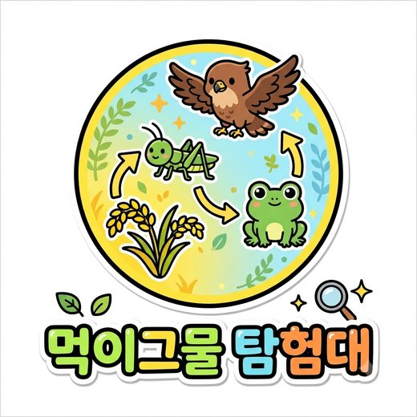
4같은 대화방에서 버튼·배경·스티커·캐릭터 이어서 주문하기
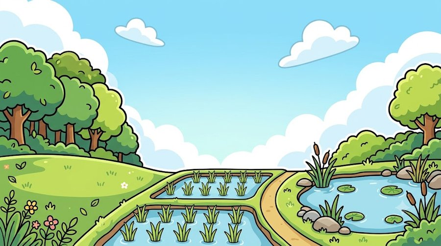
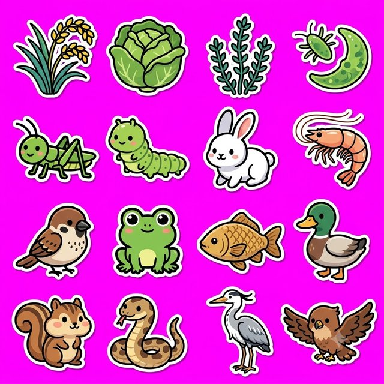
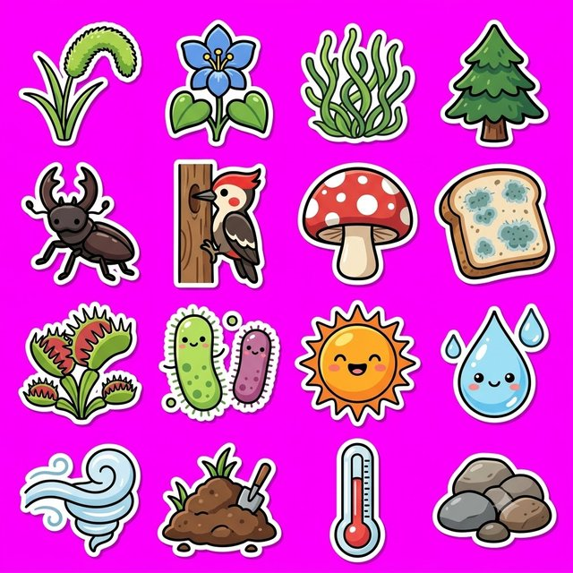
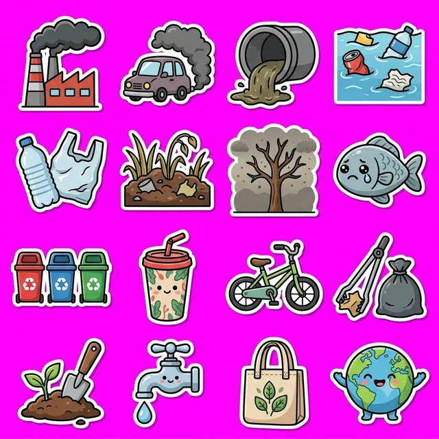
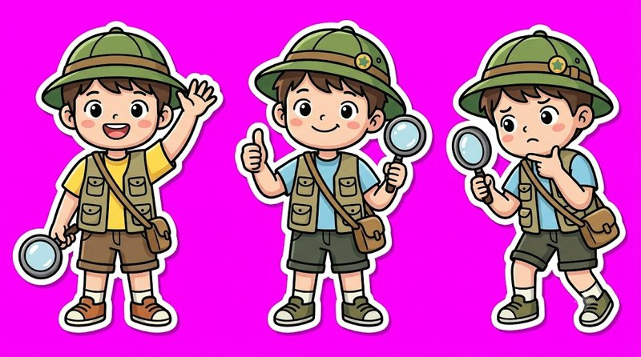
5내려받고 이름 붙이기
- 그림 위에 마우스를 올리면 나오는 ⬇ 원본 크기 다운로드 누르기
- 내려받은 파일 이름을 영어 소문자로 바꾸기
logo.pngbg.jpgbtn_start.png… - 스티커 시트는 한 장씩 잘라
frog.png처럼 저장
(캔바 ▶ 사진 업로드 ▶ 자르기·배경 제거 → PNG 다운로드) - 앱 폴더 안
images폴더에 모으기
Logo.png와 logo.png가 다른 파일입니다.
그림을 앱에 넣는 프롬프트 — 파일 이름으로 부른다
AI는 내 컴퓨터 그림을 볼 수 없어요. 대신 파일 이름과 위치를 알려 주면 그 자리에 넣는 코드를 써 줍니다.
깃허브에 올리기 — 인터넷 사물함 만들기
저장소(repository) = 앱 파일을 넣어 두는 인터넷 사물함. 공개(Public)로 만들면 무료로 웹 주소를 받을 수 있어요.
0가입하기 (처음 한 번)
- github.com → Sign up
- 이메일 → 비밀번호 → 사용자 이름(username) 정하기
- 메일로 온 인증 코드 입력
사용자이름.github.io/저장소이름/이 됩니다. 학생에게 보여 줄 주소이니 짧고 알아보기 쉽게! (예: hongdonedu)나중에 Settings → Account → Change username으로 바꿀 수 있지만, 그러면 기존 주소도 모두 바뀝니다.
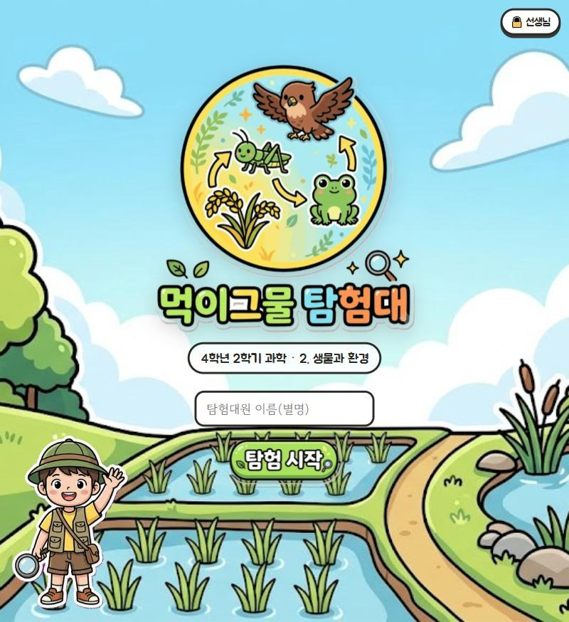
1새 저장소 만들기
오른쪽 위 ＋ → New repository
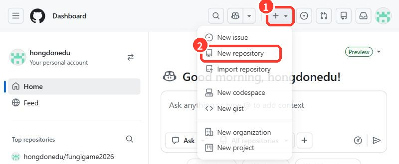
2이름 짓고 공개로 만들기
- Repository name: 영어 소문자·숫자·하이픈 (
foodweb) → 초록색 is available 확인 - Description(설명)은 한글로 자유롭게
- Public 그대로 두기 (무료 Pages는 공개 저장소에서만)
- 초록 Create repository
light-maze, life-farm, foodweb처럼 짧게 지으면 학생도 기억하기 쉬워요.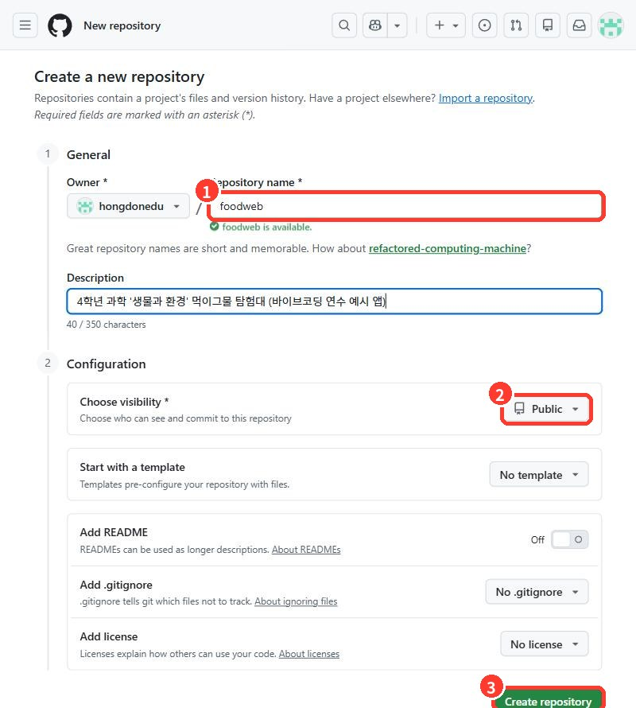
3파일 올리는 화면으로
빈 저장소 화면의 uploading an existing file 링크를 누릅니다.
(파일이 이미 있는 저장소라면 Add file → Upload files)
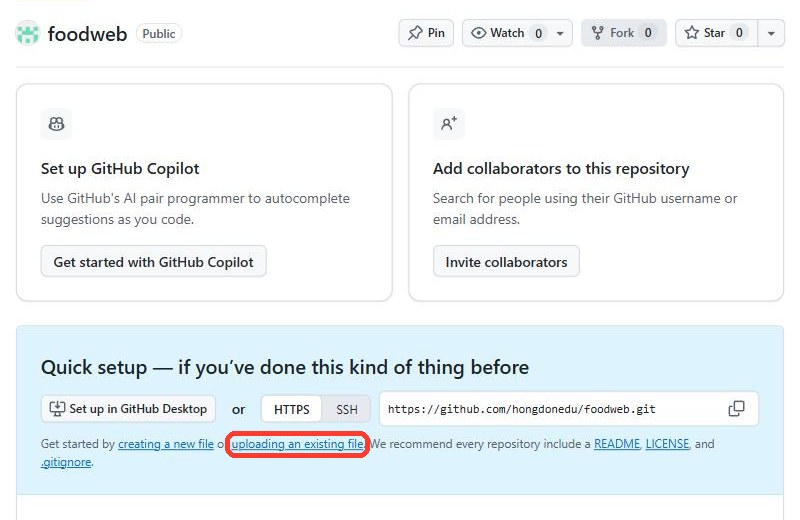
4폴더 안의 것을 모두 끌어다 놓기
- 파일 탐색기에서 앱 폴더를 열고 Ctrl+A로 index.html과 images 폴더를 모두 선택
- 점선 상자 안으로 끌어다 놓기
- 파일 목록에
images/logo.png처럼 폴더 이름까지 보이면 성공
먹이그물탐험대/index.html처럼 한 단계 안에 들어가 주소가 길어져요. 폴더를 열고 그 안의 내용물을 끌어 주세요. (한 번에 100개까지)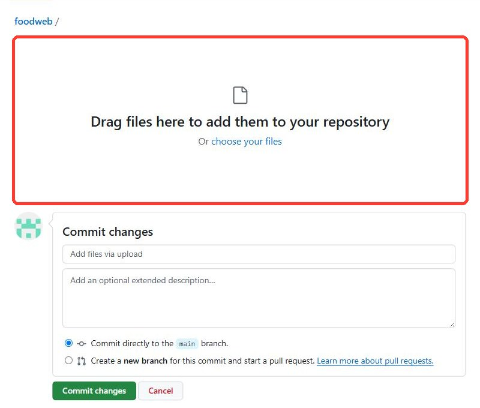
5목록 확인 → Commit changes
- 58개 파일이 올라간 것 확인 (index.html이 맨 위)
- 맨 아래 Commit changes 칸에 무엇을 올렸는지 한 줄 메모 (생략해도 됨)
- 초록 Commit changes 누르기 = 저장 완료
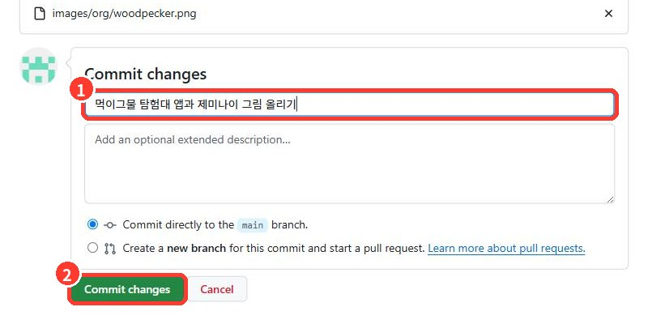
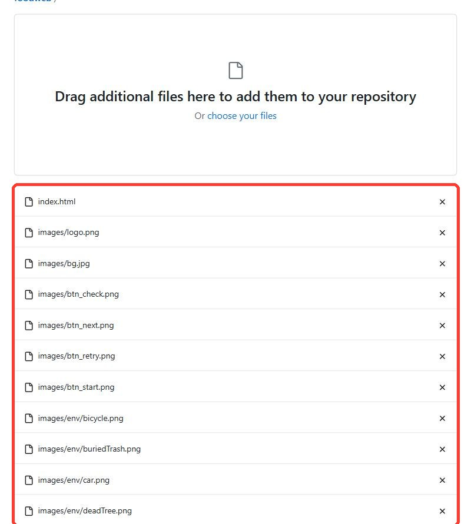
6저장소에 들어갔는지 확인
images 폴더, index.html이 보이면 성공. 이제 사물함은 채웠고, 다음 단계에서 가게 문(웹 주소)을 엽니다.
index.html.html이나 Index.html이면 주소로 열리지 않아요. 파일을 눌러 ✏️ → 이름 칸에서 고칠 수 있어요.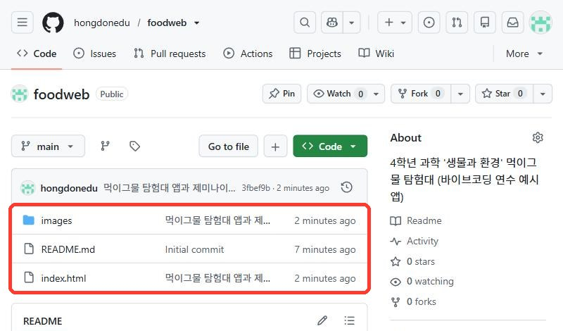
GitHub Pages 켜기 — 가게 문 열기
설정 한 번이면 저장소가 웹사이트가 됩니다. 1~2분 뒤 주소가 생겨요.
1Settings → Pages
저장소 위쪽 Settings(⚙️, 좁은 화면에서는 More 안) → 왼쪽 메뉴 Pages → Branch의 None을 누릅니다.
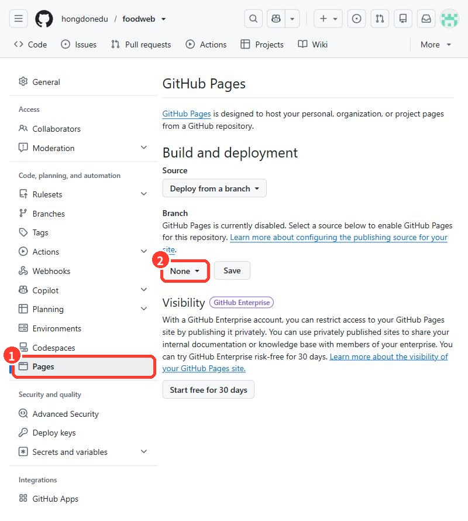
2main → / (root) → Save
- 목록에서 main 선택
- 폴더는 / (root) 그대로
- Save
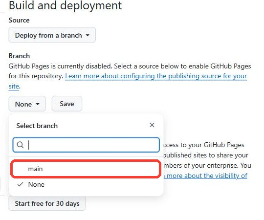
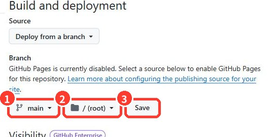
31~2분 뒤 새로고침 → 주소 확인
Your site is live at 옆의 주소가 내 앱 주소입니다. Visit site로 열어 보세요.
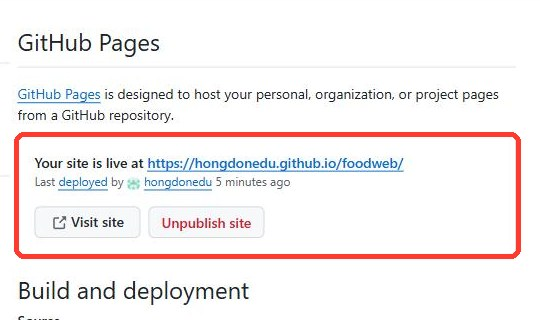
넷리파이 — 폴더 끌어다 놓으면 끝
깃허브 없이도 OK. 폴더를 끌어다 놓으면 몇 초 만에 ○○.netlify.app 주소가 생깁니다.
1로그인 (깃허브 계정으로)
app.netlify.com → Log in with GitHub (처음이면 Sign up → GitHub). 계정을 하나 더 만들 필요가 없어요.
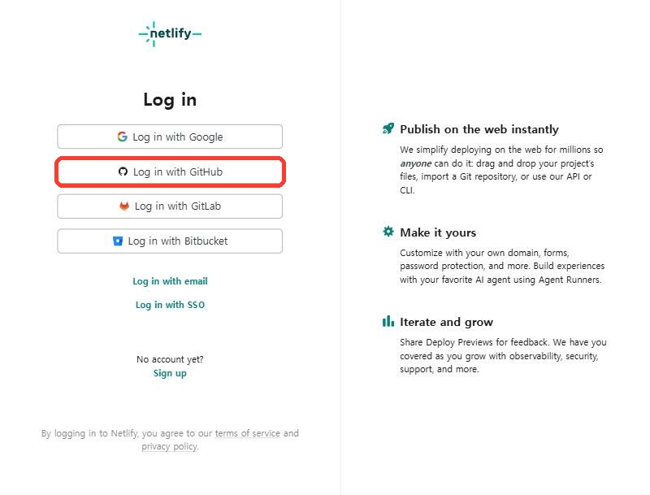
2Add new project → 폴더 끌어다 놓기
- Projects 화면의 Add new project
- 아래쪽 Upload your project files 상자에 앱 폴더째 끌어다 놓기
(넷리파이는 폴더째 놓아도 됩니다 · zip 파일, HTML 파일 하나도 가능)
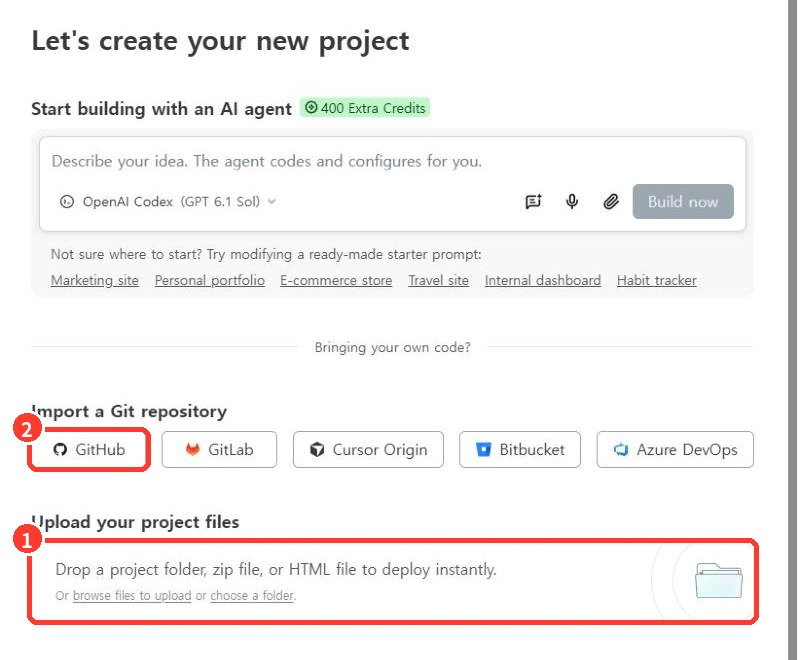
3공개 완료 — 이름만 바꾸면 끝
Published! 처음에는 storied-bunny-cc5944처럼 무작위 이름이 붙어요. Project configuration에서 바꿉니다.
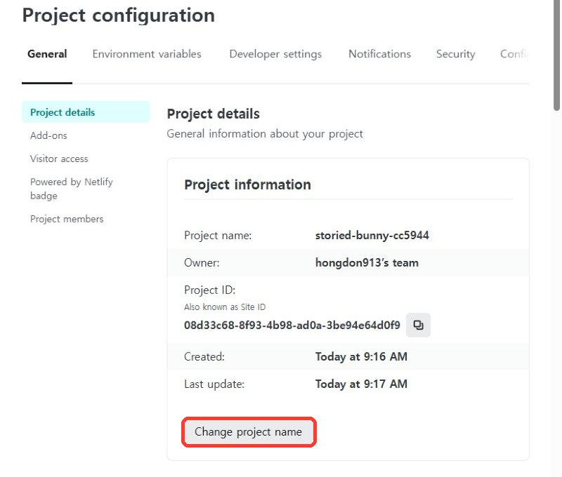
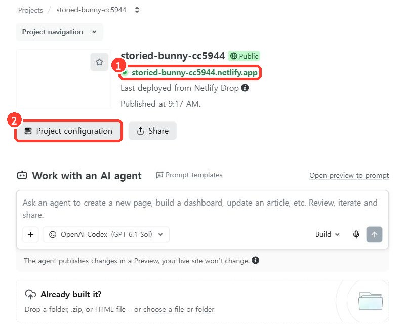
4알아보기 쉬운 이름으로
- 영어 소문자·숫자·하이픈으로 입력 → Project name is available 확인
- Save
➜ https://foodweb-4th-science.netlify.app
foodweb-explorer는 이미 사용 중이라 foodweb-4th-science로 정함)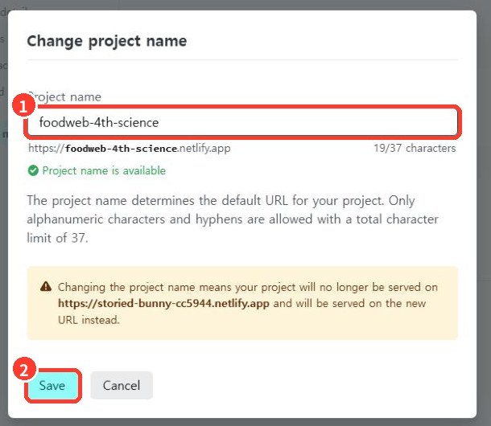
고치고 다시 올리기
주소는 그대로, 내용만 바뀝니다. 학생에게 QR을 다시 줄 필요가 없어요.
| 깃허브 Pages | 넷리파이 | |
|---|---|---|
| 파일 바꾸기 | 바꿀 파일이 있는 폴더로 들어가 Add file → Upload files → 같은 이름 파일을 끌어다 놓기 → Commit changes (같은 이름이면 덮어쓰기) | 프로젝트 화면의 Already built it? Drop a folder 상자에 고친 폴더를 다시 끌어다 놓기 |
| 글자만 살짝 | index.html 열기 → ✏️(Edit) → 고치기 → Commit changes | 폴더를 다시 끌어다 놓기 (또는 깃허브 연결 시 자동) |
| 반영 시간 | 1~2분 (Actions 탭 초록 ✓) | 몇 초 |
| 되돌리기 | 파일 → History에서 이전 버전 확인 | Deploys에서 이전 배포 Publish deploy |
✓깃허브에서 다시 올리기
저장소에서 ＋(Add file) → Upload files → 고친 파일 끌어다 놓기 → Commit changes. 오른쪽 Deployments · github-pages에 초록 ✓가 뜨면 반영 완료!
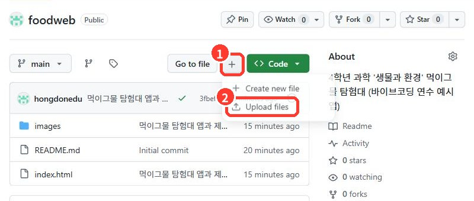
무엇을 쓸까? · 꼭 지킬 것
| 깃허브 Pages | 넷리파이 | |
|---|---|---|
| 주소 | 사용자이름.github.io/저장소이름/ | 프로젝트이름.netlify.app |
| 장점 | 파일 보관 + 버전 기록 + 주소를 한 곳에서. 앱이 쌓일수록 '내 앱 창고'가 됨 | 가장 빠름(끌어다 놓기 몇 초). 폴더째·zip·HTML 하나도 OK |
| 아쉬운 점 | 처음 설정 단계가 조금 많음, 반영 1~2분 | 무료 사용량 한도가 있음, 파일 기록은 깃허브만큼 자세하지 않음 |
| 추천 | 오래 쓸 앱, 계속 고쳐 나갈 앱 | 오늘 바로 써야 하는 앱, 연수 실습 |
🔐 공개 저장소에 넣으면 안 되는 것
학생 이름·사진·연락처, 비밀번호, API 키(제미나이 API 키 등). 공개 저장소는 전 세계 누구나 볼 수 있어요. API 키가 필요한 앱은 앱스 스크립트(Code.gs)처럼 숨길 수 있는 곳에 둡니다.🖼️ 그림 저작권은?
직접 만든 그림(제미나이 생성 포함)과 사용 허락된 그림만 쓰세요. 캐릭터·노래·글꼴도 마찬가지입니다. 제미나이 이용 약관과 학교 방침을 확인하세요.📱 학생 진행 기록은 어디에 저장돼요?
먹이그물 탐험대는 학생 기기의 브라우저(localStorage)에만 저장하고 어디로도 보내지 않습니다. 기기를 바꾸면 기록이 이어지지 않아요.🧩 그림이 엑스박스로 나와요
① 파일 이름 대소문자 확인(Frog.png ≠ frog.png) ② images 폴더가 함께 올라갔는지 ③ 코드 속 경로(images/org/frog.png)와 실제 위치가 같은지 확인하세요.